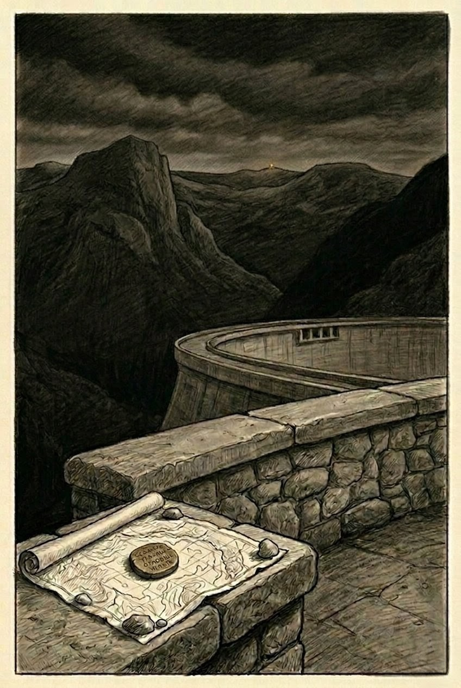

A Rila's Tale
A novel of hidden valleys, old faith, and a mountain that remembers.
Beginning in the spring of 1938 in Bulgaria's Rila Mountains, a monk and a village girl follow whispers of a vine that drinks moonlight — and the guardianship it demands of everyone who finds it.

The Book
Rila — Bulgaria's mightiest mountain range, crowned with glacial lakes and blanketed in forests so vast they swallow sound — has shaped the author's family for generations of vineyard keepers and wine lovers.
Woven from fact and legend, the story follows Father Atanas, a monk-scholar who breaks fifteen years of vows to chase a name found scribbled in the monastery archives — лоза от Дри́скѫ, "the vine from Driska" — and Kalina, the village girl whose sight sees past beauty to what a place is truly guarding.
"The following pages, which begin in the spring of 1938, weave a mix of fact and fiction, myth and reality — a tale as timeless as the mountains themselves."
Walk the Story
Every pin below is a real place in Bulgaria's Rila Mountains that appears in the novel — plus one that isn't on any map at all. Click a pin, or browse the cards further down.
Locations
Real-world context alongside the story's own words. Have your own photos from these places? Drop a .jpg into assets/photos/ named after the location (see file names in page source) and it will appear here automatically.
Glossary
The people, powers, and pacts that hold the story together.